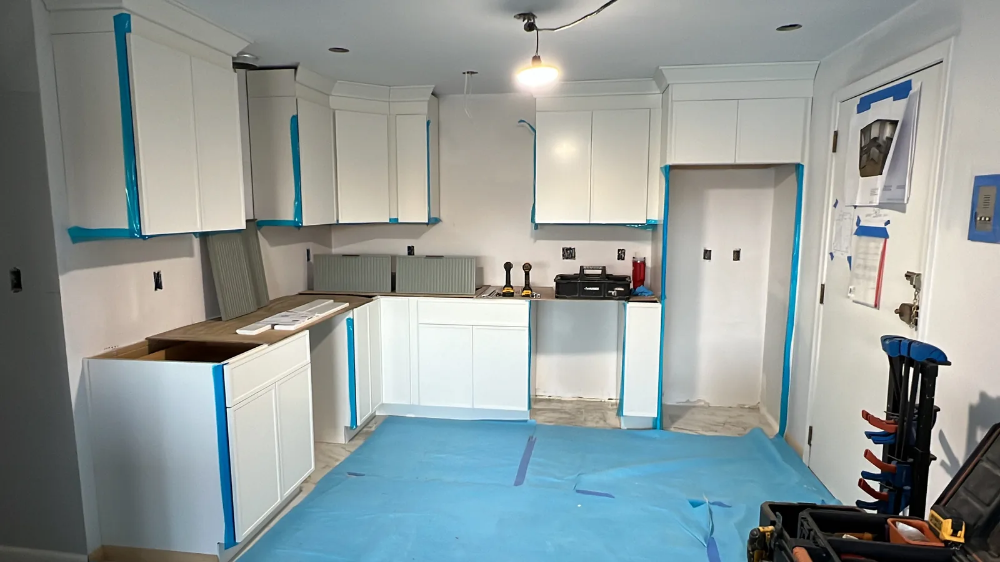
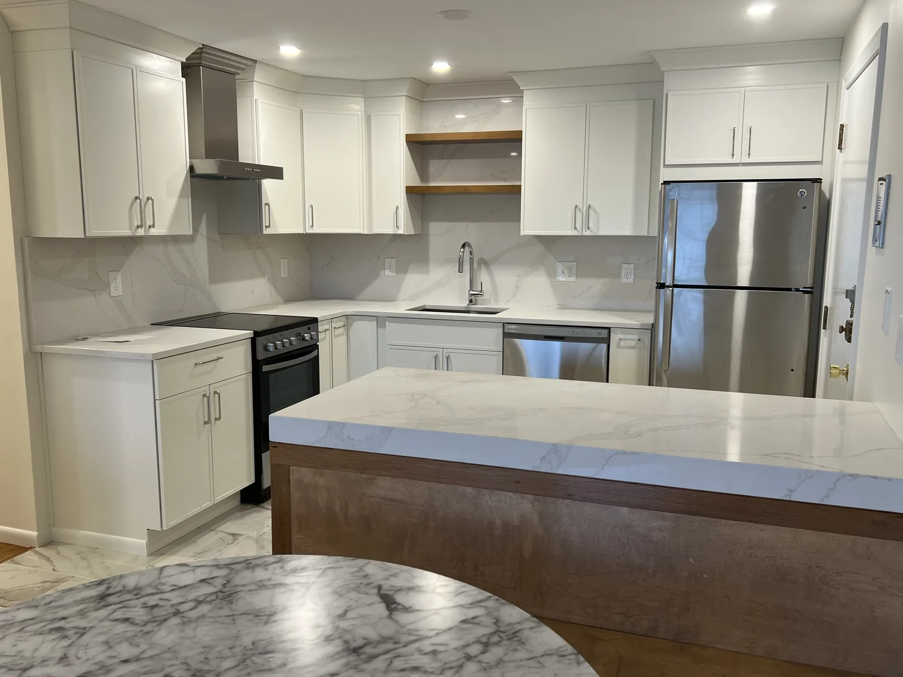
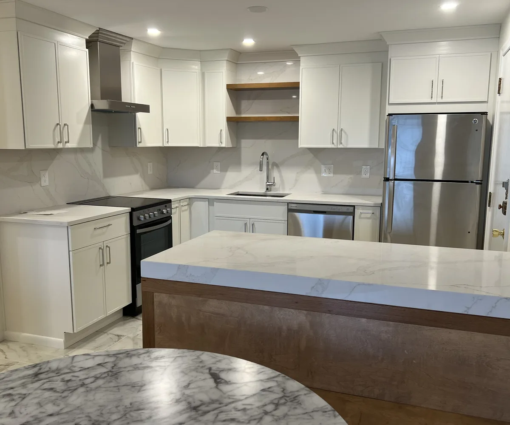

Bedford, Middlesex County, MA
Kitchen remodeling Bedford, MA: layout, cabinets and finishes planned together
Kitchen remodeling in Bedford, MA from DeFaria Construction starts with the house: the layout you have, the walls that can move and the wiring and plumbing behind them, then cabinets, counters, lighting and flooring, all in one written scope.
Bedford, Middlesex County
Kitchen remodeling for Bedford homes, from postwar Capes to Great Road colonials
This page is for Bedford in Middlesex County, the town between Lexington, Concord, Carlisle, Billerica, Burlington and Lincoln, next to Hanscom Field. It is not New Bedford on the South Coast, which is more than an hour south and outside the area DeFaria serves.
Most Bedford neighborhoods were built during the town growth after World War II, so many kitchens we see are in Capes, ranches, split-levels and garrison colonials from the 1950s to the 1970s. Closer to Bedford Center and along Great Road there are older homes, some from the 1700s and 1800s, where the kitchen has been changed several times over the years.
That history decides the plan. A postwar ranch usually has a closed galley kitchen that can be opened to the dining room. An older colonial often has a small kitchen at the back of the house, uneven floors and walls that were never square, so cabinets and counters have to be scribed to fit.
- Postwar Capes, ranches and split-levels with closed kitchens
- Older homes near Bedford Center and Great Road
- Bedford, MA 01730 in Middlesex County, not New Bedford
The scope
What a full Bedford Kitchen Remodel can include
The visible result depends on decisions made before cabinets and counters arrive. In Bedford, DeFaria looks at the existing footprint, the daily traffic path, appliance locations and the finish level before separating the project into disconnected purchases.
- Kitchen Cabinets should be measured around storage habits, appliance clearances and the way the room connects to dining or living space.
- A Kitchen Island can anchor the room only if the walkway, lighting and countertop dimensions are planned together.
- Bedford kitchens need the unseen parts of the project to line up with the visible cabinet and counter decisions.
Bedford projects benefit from confirming the real scope before materials drive the budget. That is why the first conversation is about scope, not only colors and materials.
Layout
Opening a closed kitchen in a Bedford ranch or Cape
The most common request we get in Bedford homes from the 1950s to the 1970s is to open the kitchen to the dining or family room. Whether that is simple depends on the wall. In many ranches the wall between kitchen and dining room carries the ceiling joists or the roof load, so taking it out means a beam, sized by an engineer when needed, with posts carried down to the foundation.
A flush beam hidden in the ceiling gives the cleanest look but takes more work and time. A dropped beam is faster and costs less. We show you both options with the price difference before anything is ordered, so the decision is yours and not a surprise in the middle of the job.
Opening a wall also moves things you do not see: heating runs, plumbing vents and wiring that pass through it. We map those at the first visit, because they change the scope more than the cabinets do.
- Bearing wall check before the layout is final
- Flush or dropped beam, priced side by side
- Heating, vent and wiring reroutes included in the scope
Behind the walls
Wiring, plumbing and ventilation in older Bedford kitchens
A kitchen built in the 1960s was wired for far fewer appliances than a family uses today. Current code and good practice call for at least two small-appliance circuits on the counters, dedicated circuits for the major appliances and protected receptacles. Most Bedford kitchens we open need a panel review and new circuits.
Plumbing gets the same check. Old galvanized supply lines, a drain that was never properly vented or a sink moved to an island all need to be planned with a licensed plumber. A range hood should be ducted to the outside, and a powerful hood may need make-up air, which is easier to plan before the ceiling is closed.
- Dedicated appliance circuits and protected receptacles
- Supply and drain updates by licensed plumbers
- Range hood ducted outside, with make-up air when required
Permits
Permits and approvals for a Bedford kitchen remodel
A kitchen remodel that moves walls, plumbing, wiring or gas needs a building permit from the Town of Bedford under the Massachusetts State Building Code, plus electrical, plumbing and gas permits pulled by the licensed trades. DeFaria files the building permit and schedules the inspections: rough framing, rough electrical and plumbing, insulation when walls are opened to the outside, and final.
Bedford has a local historic district around Bedford Center. Interior work is not reviewed, but if the remodel changes windows, doors or an exterior wall visible from the street on a home inside the district, the Historic District Commission usually reviews it first. We check that at the walkthrough so the schedule allows for it.
- Building permit filed by DeFaria
- Electrical, plumbing and gas permits by licensed trades
- Historic District Commission review only for visible exterior changes
Cabinets and surfaces
Cabinets, counters and flooring that fit how you use the kitchen
Cabinets are the biggest single line in most kitchen budgets, and they set the schedule because they are ordered weeks before installation. We measure after demolition when walls are opened, so the cabinet order matches the real room, including out-of-square corners in older Bedford homes.
For counters, quartz is the most requested surface because it does not need sealing, while natural stone and butcher block suit some homes better. Flooring runs under the cabinets or stops at them depending on the material and the subfloor; we level and repair the subfloor before any finish floor goes down.
- Cabinets ordered from post-demolition measurements
- Quartz, stone or wood counters based on use
- Subfloor leveled before tile or wood floors
Cost
What drives the cost of kitchen remodeling in Bedford
Two Bedford kitchens of the same size can have very different prices. The biggest drivers are structural changes such as opening a bearing wall, moving the sink or range, electrical upgrades the room needs to meet code, the cabinet line and how many custom pieces it includes, and what we find when the old kitchen comes out.
Every DeFaria estimate is written and itemized, so you can see what each part costs and decide what to keep, change or phase. For typical price ranges in Massachusetts, see our kitchen remodel cost guide.
- Structural changes and beams
- Moving plumbing and gas
- Electrical upgrades to current code
- Cabinet line and custom pieces
Timeline
How a Bedford kitchen remodel runs, week by week
Most of the planning happens before demolition. After the walkthrough and the written estimate, we finalize the layout, order cabinets and other long-lead items and file the permits. Work on site starts when the materials are confirmed, so the kitchen is not torn out and left waiting.
On site, the order is protection of the rest of the house and demolition, framing and any beam work, rough plumbing and electrical, inspections, insulation and drywall, then cabinets, counters, backsplash, fixtures, trim and paint. We set up a temporary kitchen area when possible, because most families stay in the house during the work.
- Design, ordering and permits before demolition
- Rough work and inspections, then finishes
- Temporary kitchen setup when the family stays home
Project photos
Kitchen Remodeling photos for Bedford homeowners
Real DeFaria kitchen photos: the room before and during the work, the finished kitchen and the cabinet and finish details.



Areas covered
Kitchen remodeling across Bedford neighborhoods
DeFaria Construction remodels kitchens across Bedford and the towns around it, including Lexington, Burlington, Billerica, Carlisle, Concord and Lincoln.
- Bedford Center
- Hartwell Road area
- Great Road corridor
- Fawn Lake area
- 01730
Experience
Who you work with on a Bedford kitchen
DeFaria Construction is a local construction and remodeling company serving homeowners and business owners across Middlesex County and Essex County. Luiz DeFaria is involved in each project himself, from the first visit and the estimate to the decisions during the work, and the company holds an A+ rating with the Better Business Bureau.
On every kitchen we connect the visible choices, cabinets, counters, flooring, backsplash and lighting, to the construction work behind them, so the estimate covers the whole job.
Call (781) 586-8838 for a free estimateFAQ
Common questions about kitchen remodeling in Bedford, MA
How much does kitchen remodeling cost in Bedford, MA?
It depends mostly on structural changes, moving plumbing or gas, electrical upgrades and the cabinet line. DeFaria gives a written, itemized estimate after visiting the house; our Massachusetts kitchen cost guide shows typical ranges.
Do I need a permit to remodel a kitchen in Bedford?
Yes, when the work moves walls, plumbing, wiring or gas. The building permit comes from the Town of Bedford under the Massachusetts State Building Code, with separate electrical, plumbing and gas permits. DeFaria files the permit and books the inspections.
Can you remove the wall between the kitchen and dining room in my Bedford ranch?
Usually, yes. If the wall is bearing, it is replaced with a beam and posts down to the foundation, sized by an engineer when needed. We price a flush and a dropped beam side by side.
How long does a kitchen remodel take in Bedford?
Planning, ordering and permits come first, and work on site starts once cabinets and long-lead items are confirmed. The on-site time depends on the scope; the written schedule comes with the estimate.
Do you work in New Bedford, MA?
No. This page is for Bedford in Middlesex County. DeFaria serves Middlesex and Essex County towns north and west of Boston.
Is DeFaria Construction licensed and insured?
Yes. DeFaria Construction is a licensed and insured Massachusetts contractor with an A+ BBB rating and a 5.0 rating on Google.